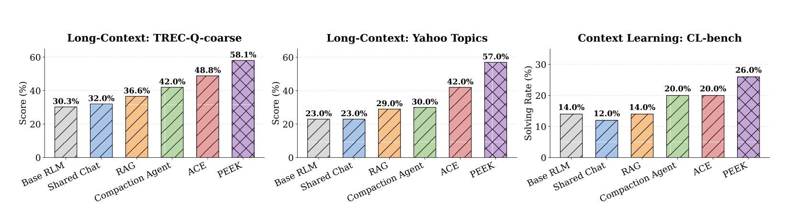
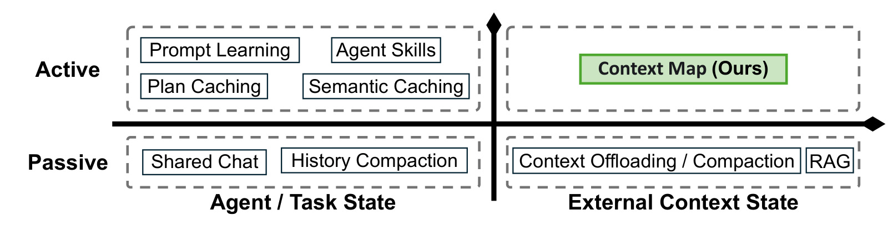
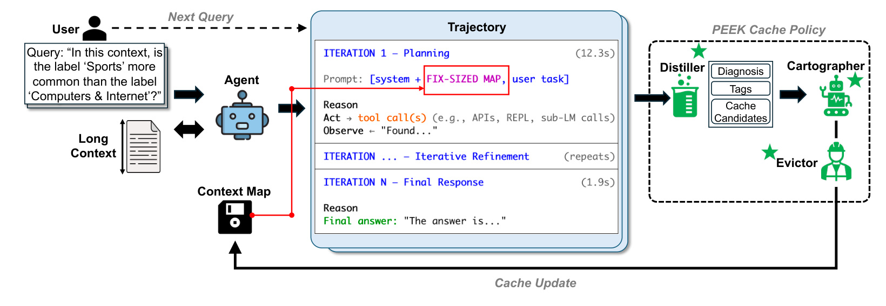
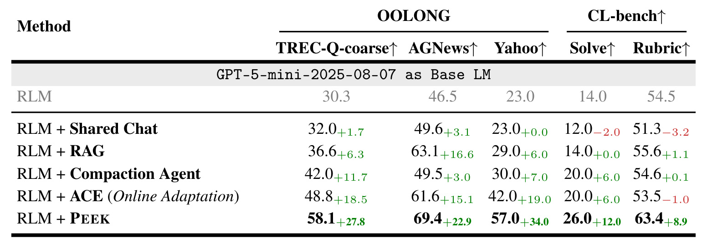

PEEK：PEEK: Context Map as an Orientation Cache for Long-Context LLM Agents
这里精读一篇最近公开的论文《PEEK: Context Map as an Orientation Cache for Long-Context LLM Agents》。中文可以叫《把上下文地图作为长上下文 Agent 的定向缓存》。
论文链接：https://arxiv.org/abs/2605.19932
PDF：https://arxiv.org/pdf/2605.19932
作者：Zhuohan Gu, Qizheng Zhang, Omar Khattab, Samuel Madden
机构/团队：MIT CSAIL / Stanford
公开日期：2026-05-19，来源：arXiv cs.AI / cs.CL / cs.LG，arXiv ID：2605.19932。
代码/项目页：PDF 首页标注 zhuohangu/peek，本轮未进一步核验仓库状态。
0. 导读
PEEK 是今天最贴近 Codex/Agent 工作流的一篇。它指出长上下文 Agent 的瓶颈不只是上下文窗口不够，而是每次面对同一个外部上下文时都要重新“找路”。现有方法保存 trajectory、shared chat、RAG 索引或 prompt learning，但很少保存“这个外部上下文里有什么、怎么组织、哪些实体和 schema 常用”这类可迁移 orientation knowledge。PEEK 把它做成固定大小的 context map。
这篇论文和每日关注范围的关系很直接：它不是孤立的模型技巧，而是围绕推荐、检索、RAG、Agent 或大模型服务链路里的真实约束展开。下面按问题、方法、图表、实验和工程判断展开。
1. 背景与问题
长上下文 Agent 处理文档库、代码库、表格库时，常有 recurring external context。用户每天问的问题不同，但底层上下文相同。若每次都靠检索和 trial-and-error 重建方向感，token、工具调用和迭代次数都会浪费。
普通 memory 会保存对话历史或任务轨迹，但这不等于保存外部上下文结构。比如一个代码库里哪个目录放 schema、哪个常量经常用、哪个文件定义路由，这些知识不是某次任务的答案，却能减少下一次探索成本。
PEEK 的目标不是扩大 context window，而是把可复用 orientation 压成小型 prompt artifact。它类似操作系统 cache：容量固定，条目需要被写入、更新和淘汰。
更抽象地看，论文要回答的是一个资源分配问题：在模型能力、上下文信息、候选预算、延迟预算或业务约束都有限时，怎样把计算放到最有价值的位置。这个问题和推荐系统里的召回预算、排序链路、广告出价、用户长期价值建模是一类问题，只是本文落在 LLM Agent 场景。
2. 核心方法
PEEK 的核心数据结构是 context map。它是放在 prompt 中的固定大小 artifact，记录外部上下文的结构、实体、常用 schema、历史上有用的信息和注意事项。固定大小很关键，否则它会退化成不断增长的 chat history。
缓存策略有三个模块。Distiller 从 inference-time signals 中抽取可迁移知识，例如 agent 查找过的文件、发现的字段、失败路径和有用实体；Cartographer 把这些知识转成结构化 edits，更新 context map；Evictor 根据优先级和 token budget 淘汰低价值条目。
运行流程是跨任务累积：agent 完成一个任务后，PEEK 检查轨迹，判断哪些信息值得写入 map；下一个任务开始时，map 作为 prompt 的一部分给 agent 一个 orientation peek。它不替代 RAG，也不保存全部上下文，而是保存“如何导航上下文”。
从系统设计看，PEEK 把 memory 从被动日志变成主动缓存。Distiller 负责抽取，Cartographer 负责维护结构，Evictor 负责预算，这种职责分离比把所有历史塞进 summary 更稳。
我在阅读时更关注模块之间的接口，而不只是模块名称。本文的共同特点是：把原本隐含在工程经验里的决策变量显式化，例如阈值、预算、缓存、维度、控制信号或刷新间隔。显式化之后，系统才有可能被校准、复现、迁移和线上监控。
3. 图表解读

图 1 给出性能快照。PEEK 在 TREC-Q-coarse、Yahoo Topics、CL-bench 等任务上明显高于 Base RLM、Shared Chat、RAG、Compaction Agent、ACE。这个图说明 context map 不是单纯省成本，也能提升任务质量。

图 2 是 agent state 设计空间。横轴区分 agent/task state 和 external context state，纵轴区分 active/passive。PEEK 落在 active external-context quadrant，和 shared chat、RAG、prompt learning 都不同。它强调保存上下文本身的方向知识。

图 3 展示 PEEK 系统。用户查询、长上下文、agent、context map 和 cache policy 形成闭环；Distiller、Cartographer、Evictor 在每次任务后维护 map。这个框架很像一个可编程缓存策略，而不是普通摘要。

表 1 是主结果。PEEK 在 OOLONG 与 CL-bench 上超过 RLM、Shared Chat、RAG、Compaction Agent、ACE，并减少大量迭代和成本。尤其对 Codex 这类代码 Agent，orientation cache 直接减少重复探索。
4. 实验与结果
论文报告 PEEK 在 long-context reasoning、information aggregation 和 context learning 上提升 6.3% 到 34.0%，减少 93 到 145 次迭代，成本比 ACE 低 1.7x 到 5.8x。在 context learning 上，solving rate 与 rubric accuracy 也提升。表 2 还显示它能泛化到不同 base LM 与 agent 架构，包括 Codex。
这些结果的边界也要看清。论文报告的指标主要证明当前问题定义下的方法有效，但并不等价于所有生产链路都会得到同等收益。尤其是推理系统论文要区分 decoding time、end-to-end latency 和服务端吞吐；RAG/Agent 论文要区分 benchmark score、真实用户满意度和长期维护成本；工业推荐/平台论文要区分离线回放、短期 A/B 和长期生态影响。
5. 我的理解
我认为 PEEK 对日常工程 Agent 的启发很强。我们经常让 Agent 反复读同一个仓库，但每次任务开始时它都要重新找入口、schema、测试命令、风险文件。AGENTS.md 和自动化 memory 解决了一部分问题，但 PEEK 更细：它保存的是随任务经验成长的 context map。推荐系统里也有类似需求，比如同一个业务知识库、指标口径、实验平台反复被问，context map 可以减少 RAG 噪声。
从研究脉络看，这类工作共同说明一个趋势：大模型和推荐系统都在从“单模型效果”走向“系统级可控”。以前我们常把模型能力看成主要变量，现在越来越多论文开始处理部署预算、缓存策略、风险校准、候选预算、跨城市迁移、长期状态记忆等问题。这些问题不一定在排行榜上最耀眼，却更接近真实业务系统里的主要瓶颈。
6. 工程启发与复现建议
复现不必立即完整实现论文系统，可以先做一个固定 token budget 的 context_map.md，每次任务结束由 Distiller 提取“下次仍可能有用”的路径、实体、字段和坑点，再由 Cartographer 以结构化 diff 更新。Evictor 可以先用简单优先级：最近用过、跨任务复用、用户确认重要的信息保留，失败路径和一次性信息淘汰。评测时记录任务完成率、工具调用次数、读取文件数和总 token。
如果要把这篇论文纳入自己的技术栈，我建议先做最小闭环，而不是一次性复现全部实验。先找到一个可观测的瓶颈指标，再实现论文中最核心的决策变量，最后用分桶指标看收益是否来自目标机制。只有当收益在关键分桶上成立，才值得继续投入完整系统实现。
7. 局限与风险
- context map 写错会形成长期错误先验，比一次性 RAG 噪声更危险，需要验证和过期机制。
- 固定大小预算会丢信息，复杂仓库或多主题知识库可能需要分层 map。
- Distiller/Cartographer 本身消耗模型调用，论文总体成本下降不代表每个场景都划算。
- 隐私与权限问题明显，map 可能长期保存敏感路径、schema 或业务口径。
- 实验集中在特定 benchmark，真实多用户、多权限、多分支仓库的鲁棒性还需观察。
8. 后续跟进
- 查看 zhuohangu/peek 仓库是否开放，重点看 map schema 与 eviction policy。
- 把 PEEK 思路接入本地自动化 memory，记录论文检索偏好和重复索引。
- 在代码仓库任务中评估 context map 对文件 revisits 和 token 的影响。
- 探索和 RAG 结合：context map 负责导航，RAG 负责取证。
9. 精读补充：Agent Memory 的工程形态
PEEK 对本地自动化尤其有直接启发。当前很多自动化只保存“上次做了什么”，但没有保存“这个工作空间如何导航”。例如每日论文调研需要知道历史笔记在哪里、主页站点怎么同步、哪些论文昨天已经写过、哪些截图规则容易出错。这些不是最终答案，却是下一次运行的 orientation knowledge。PEEK 的 context map 可以把这些知识结构化为路径、实体、规则、常见失败和高价值查询，而不是埋在长日志里。
实现时不能把 context map 做成无限增长的 notepad。PEEK 的固定大小约束非常重要，因为 Agent prompt 预算有限，且过多旧信息会污染当前任务。一个实际 schema 可以分为五段：workspace map 记录目录和脚本，entity map 记录关键论文、slug、模型名，validated facts 记录已核验事实，pitfalls 记录容易出错的地方，eviction log 记录被删掉的低价值项。每次任务结束后只允许有限条结构化 edit，这比自由摘要更可控。
PEEK 还提醒我们，memory 更新本身需要验证。Distiller 从轨迹抽取知识时可能把临时现象误判为长期规律；Cartographer 可能把条目写错位置；Evictor 可能删掉之后还会用到的信息。因此工程版本最好引入置信标记和来源链接：每个 map 条目带上 source task、last verified time、confidence 和 expiry condition。当任务失败或用户纠正时，要能反向更新 map，而不是只累积成功经验。
和 RAG 的关系也要区分。RAG 适合获取事实证据，PEEK 适合提供导航先验。把二者混在一起会造成问题：如果把大量原文塞进 context map，它会变成低效知识库；如果只靠 RAG，不保存导航经验，Agent 每次又会重复探索。推荐系统里的用户长期兴趣建模也有类似分工：短期检索取证，长期偏好地图提供方向。PEEK 的价值就在于把这两类信息分开。
10. 失败案例与监控指标补充
PEEK 的失败模式和普通 RAG 不一样。RAG 错了通常是某次检索证据错，影响当前回答；context map 错了则可能影响后续一连串任务。比如 map 里错误记录“某个 schema 在 A 文件”，Agent 之后会优先去 A 文件探索，反复浪费时间。又如 map 保存了过时 API，代码库升级后旧路径会变成误导。再如 map 中保存了太多某一类任务的经验，遇到新任务时产生过强先验，忽略真正相关的新上下文。这些问题都要求 PEEK 有验证、过期和冲突处理。
可观测指标应围绕“是否减少探索而不牺牲正确性”设计。建议记录每次任务的文件读取数、工具调用数、重复读取文件数、首次找到关键证据的时间、map 引用次数、map 条目命中后是否被最终答案使用、以及用户纠错中有多少来自 map 误导。还可以给每个 map 条目维护 hit/miss 历史：被引用后推动任务成功的条目升权，长期未用或导致失败的条目降权。这样 Evictor 才不是简单按时间淘汰，而是按真实效用淘汰。对自动化论文调研这种 recurring workflow，PEEK 式 map 可以记录“哪些来源经常有重复论文”“哪些 slug 已同步”“哪些截图规则必须检查”，让每天运行越来越稳。
11. 复现实验口径补充
最小复现可以选一个重复任务环境，例如同一代码仓库上的 20 个 issue、同一论文库上的 20 个检索问题，先跑无 memory baseline，再跑 shared summary，再跑结构化 context map。评估时不要只看最终成功率，还要记录“第一次触达关键文件/证据”的步数。PEEK 的收益应表现为更少探索、更快定位和更低重复读取，而不是简单把更多答案塞进 prompt。若 map 只提升 token 成本但不减少探索，说明 Distiller 写入的是答案片段而不是 orientation knowledge。